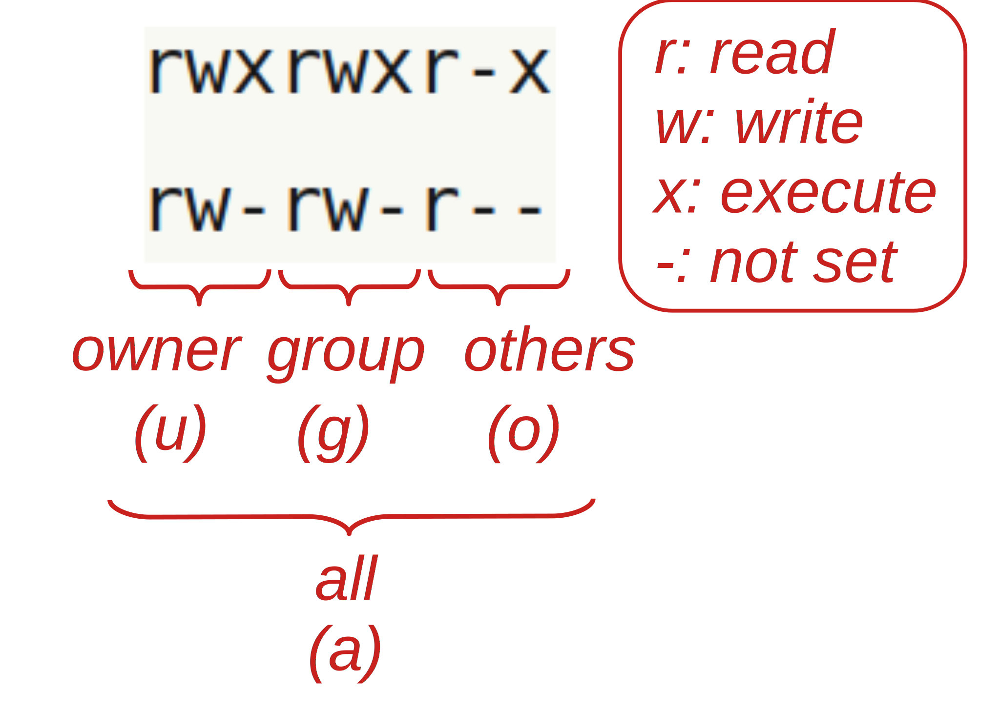

Managing files in the shell
1 Overview & setting up
In this session, we will learn some more Unix shell skills, focusing on commands to manage files with an eye on organizing your research projects.
Specifically, we will learn about:
- Wildcard expansion to select and operate on multiple files at once
- Brace expansion to help create regular series of files and dirs
- Command substitution to save the output of commands
- For loops to repeat operations across, e.g., file
- Renaming multiple files using for loops
And for those that are interested, there is some optional at-home reading about changing file permissions (e.g. to make your raw data read-only) and creating symbolic links (to access files across different projects).
1.1 VS Code setup
Log in to OSC’s OnDemand portal at https://ondemand.osc.edu.
In the blue top bar, select
Interactive Appsand then near the bottom of the dropdown menu, clickCode Server.In the form that appears on a new page:
- Select OSC project
PAS2700 - The starting directory:
/fs/ess/PAS2700/users/<user>(replace<user>with your OSC username) Number of hours:2- Click
Launch.
- Select OSC project
On the next page, once the top bar of the box has turned green and says
Runnning, clickConnect to VS Code.Open a Terminal by clicking =>
Terminal=>New Terminal.Type
pwdto check where you are.If you are not in
/fs/ess/PAS2700/users/<user>click =>File=>Open Folder, then type/select/fs/ess/PAS2700/users/<user>and press OK.
1.2 Create a dummy project – following Buffalo
Go into the dir for this tutorial that you created earlier:
# You should be in /fs/ess/PAS2700/users/$USER/
cd week02First, we’ll create a set of directories representing a dummy research project:
mkdir zmays-snps
cd zmays-snps
# The -p option for mkdir will allow for 'recursive' (nested) dir creation
mkdir -p data/fastq scripts results/figsThe touch command will create one or more empty files. We will use it to create some empty files that are supposed to represent sequence files with forward (“R1”) and reverse (“R2”) DNA sequence reads for 3 samples:
cd data/fastq
touch sample1_R1.fastq.gz sample1_R2.fastq.gz
touch sample2_R1.fastq.gz sample2_R2.fastq.gz
touch sample3_R1.fastq.gz sample3_R2.fastq.gzFor a nice recursive overview of your directory structure, use the tree command (with option -C to show colors):
# "../.." tells tree to start two levels up
# (Output colors are not shown on this webpage)
tree -C ../..../..
├── data
│ └── fastq
│ ├── sample1_R1.fastq.gz
│ ├── sample1_R2.fastq.gz
│ ├── sample2_R1.fastq.gz
│ ├── sample2_R2.fastq.gz
│ ├── sample3_R1.fastq.gz
│ └── sample3_R2.fastq.gz
├── results
│ └── figs
└── scripts
5 directories, 6 files2 Wildcard expansion
Shell wildcard expansion is a very useful technique to select files. Selecting files with wildcard expansion is called globbing. Wildcards are symbols that have a special meaning.
The * wildcard
In globbing, the * wildcard matches any number of any character, including nothing.
With the following files in our directory:
lssample1_R1.fastq.gz sample1_R2.fastq.gz sample2_R1.fastq.gz
sample2_R2.fastq.gz sample3_R1.fastq.gz sample3_R2.fastq.gzWe can match both “sample1” files as follows:
ls sample1*sample1_R1.fastq.gz sample1_R2.fastq.gzls sample1*fastq.gzsample1_R1.fastq.gz sample1_R2.fastq.gzTo match only files with forward reads (contain “_R1”):
ls *_R1*sample1_R1.fastq.gz sample2_R1.fastq.gz sample3_R1.fastq.gzls *R1.fastq.gzsample1_R1.fastq.gz sample2_R1.fastq.gz sample3_R1.fastq.gzWhen globbing, the pattern has to match the entire file name, so this doesn’t match anything:
# There are no files that _end in_ R1: we'd need another asterisk at the end
ls *R1ls: cannot access *R1: No such file or directoryIn summary:
| Pattern | Matches files whose names… |
|---|---|
* |
Contain anything (matches all files)1 |
*fastq.gz |
End in “.fastq.gz” |
sample1* |
Start with “sample1” |
*_R1* |
Contain “_R1” |
Exercise: File matching 1
- List only the FASTQ files for sample 3.
Click for the solution
ls sample3*sample3_R1.fastq.gz sample3_R2.fastq.gz- Which files would
ls samp*le*match?
Click for the solution
All of them, since all file names start with sample, and because * also matches “zero characters”, there is no requirement for there to be a character between the p and the l.
Other shell wildcards
There are two more shell wildcards, and here is a complete overview of shell wildcards:
| Wildcard | Matches |
|---|---|
| * | Any number of any character, including nothing |
| ? | Any single character |
| [] and [^] | One or none (^) of the “character set” within the brackets |
Using the ? wildcard to match both R1 and R2:
ls sample1_R?.fastq.gzsample1_R1.fastq.gz sample1_R2.fastq.gzTo match files for sample1 and sample2 using only a character class with []:
Method 1 — List all possible characters (
1and2in this case):ls sample[12]*sample1_R1.fastq.gz sample1_R2.fastq.gz sample2_R1.fastq.gz sample2_R2.fastq.gzMethod 2 – Use a range like
[0-9],[A-Z],[a-z]:ls sample[1-2]*sample1_R1.fastq.gz sample1_R2.fastq.gz sample2_R1.fastq.gz sample2_R2.fastq.gzMethod 3 – Exclude the unwanted sample ID:
ls sample[^3]*sample1_R1.fastq.gz sample1_R2.fastq.gz sample2_R1.fastq.gz sample2_R2.fastq.gz
[] works on single character ranges only: 0-9 works but 10-13 does not.
The examples so far may seem trivial, but you can use these techniques to easily operate on selections among 100s or 1000s of files.
Expansion is done by the shell itself
The expansion –to all matching file names– is done by the shell, not by ls or another command you might be using wildcards with. Therefore, ls will “see”/“receive” the list of files after the expansion has already happened.
For example: we can copy (cp command), move (mv) or delete (rm) files with shell expansion, and we can also first check which files those command will “see” by first using echo (or ls) with the exact same globbing pattern:
# Check which files are selected
echo sample[12]*sample1_R1.fastq.gz sample1_R2.fastq.gz sample2_R1.fastq.gz sample2_R2.fastq.gz# Remove the files with rm
# (The -v option will make rm report what it's removing)
rm -v sample[12]*removed ‘sample1_R1.fastq.gz’
removed ‘sample1_R2.fastq.gz’
removed ‘sample2_R1.fastq.gz’
removed ‘sample2_R2.fastq.gz’Don’t confuse wildcards with regular expressions! You may have used regular expressions before, for example with R or a text editor. They are similar to but not the same as shell wildcards.
3 Brace expansion
Whereas wildcard expansion looks for corresponding files and expands to whichever files are present, brace expansion with {}, is another type of shell expansion that expands to whatever you tell it to.
# First move up to zmays-snps
cd ../..Use .. within {} to indicate ranges of numbers or letters:
# Here we'll create 31 _dirs_ for different dates
mkdir -p data/obs/2024-03-{01..31}
ls data/obs2024-03-01 2024-03-04 2024-03-07 2024-03-10 2024-03-13 2024-03-16 2024-03-19 2024-03-22 2024-03-25 2024-03-28 2024-03-31
2024-03-02 2024-03-05 2024-03-08 2024-03-11 2024-03-14 2024-03-17 2024-03-20 2024-03-23 2024-03-26 2024-03-29
2024-03-03 2024-03-06 2024-03-09 2024-03-12 2024-03-15 2024-03-18 2024-03-21 2024-03-24 2024-03-27 2024-03-30# Here we'll create 6 empty _files_
touch results/figs/fig-1{A..F}.png
ls results/figsfig-1A.png fig-1B.png fig-1C.png fig-1D.png fig-1E.png fig-1F.pngFinally, you can also use a comma-separated list, and multiple brace expansions — with the latter, you will get all combinations among values in the expansions:
mkdir -p data/obs2/treatment-{Kr,Df,Tr}_temp-{lo,med,hi}
ls data/obs2treatment-Df_temp-hi treatment-Kr_temp-hi treatment-Tr_temp-hi
treatment-Df_temp-lo treatment-Kr_temp-lo treatment-Tr_temp-lo
treatment-Df_temp-med treatment-Kr_temp-med treatment-Tr_temp-medExercise: File matching 2
- Move back into
data/fastq/and remove all (remaining) files in there in one go.
Click for the solution
cd data/fastq/ # Assuming you were still in /fs/ess/PAS2700/users/$USER/week02/zmays-snps
# (You don't have to use the -v flag)
rm -v *fastq.gzremoved ‘sample3_R1.fastq.gz’
removed ‘sample3_R2.fastq.gz’- Using brace expansion and the
touchcommand, create emptyR1andR2FASTQ files for 100 samples with IDs from001to100:sample<ID>_R1.fastqandsample<ID>_R2.fastq.
Click for the solution
touch sample{001..100}_R{1,2}.fastq
lssample001_R1.fastq sample026_R1.fastq sample051_R1.fastq sample076_R1.fastq
sample001_R2.fastq sample026_R2.fastq sample051_R2.fastq sample076_R2.fastq
sample002_R1.fastq sample027_R1.fastq sample052_R1.fastq sample077_R1.fastq
sample002_R2.fastq sample027_R2.fastq sample052_R2.fastq sample077_R2.fastq
sample003_R1.fastq sample028_R1.fastq sample053_R1.fastq sample078_R1.fastq
sample003_R2.fastq sample028_R2.fastq sample053_R2.fastq sample078_R2.fastq
sample004_R1.fastq sample029_R1.fastq sample054_R1.fastq sample079_R1.fastq
sample004_R2.fastq sample029_R2.fastq sample054_R2.fastq sample079_R2.fastq
sample005_R1.fastq sample030_R1.fastq sample055_R1.fastq sample080_R1.fastq
sample005_R2.fastq sample030_R2.fastq sample055_R2.fastq sample080_R2.fastq
sample006_R1.fastq sample031_R1.fastq sample056_R1.fastq sample081_R1.fastq
sample006_R2.fastq sample031_R2.fastq sample056_R2.fastq sample081_R2.fastq
sample007_R1.fastq sample032_R1.fastq sample057_R1.fastq sample082_R1.fastq
sample007_R2.fastq sample032_R2.fastq sample057_R2.fastq sample082_R2.fastq
sample008_R1.fastq sample033_R1.fastq sample058_R1.fastq sample083_R1.fastq
sample008_R2.fastq sample033_R2.fastq sample058_R2.fastq sample083_R2.fastq
sample009_R1.fastq sample034_R1.fastq sample059_R1.fastq sample084_R1.fastq
sample009_R2.fastq sample034_R2.fastq sample059_R2.fastq sample084_R2.fastq
sample010_R1.fastq sample035_R1.fastq sample060_R1.fastq sample085_R1.fastq
sample010_R2.fastq sample035_R2.fastq sample060_R2.fastq sample085_R2.fastq
sample011_R1.fastq sample036_R1.fastq sample061_R1.fastq sample086_R1.fastq
sample011_R2.fastq sample036_R2.fastq sample061_R2.fastq sample086_R2.fastq
sample012_R1.fastq sample037_R1.fastq sample062_R1.fastq sample087_R1.fastq
sample012_R2.fastq sample037_R2.fastq sample062_R2.fastq sample087_R2.fastq
sample013_R1.fastq sample038_R1.fastq sample063_R1.fastq sample088_R1.fastq
sample013_R2.fastq sample038_R2.fastq sample063_R2.fastq sample088_R2.fastq
sample014_R1.fastq sample039_R1.fastq sample064_R1.fastq sample089_R1.fastq
sample014_R2.fastq sample039_R2.fastq sample064_R2.fastq sample089_R2.fastq
sample015_R1.fastq sample040_R1.fastq sample065_R1.fastq sample090_R1.fastq
sample015_R2.fastq sample040_R2.fastq sample065_R2.fastq sample090_R2.fastq
sample016_R1.fastq sample041_R1.fastq sample066_R1.fastq sample091_R1.fastq
sample016_R2.fastq sample041_R2.fastq sample066_R2.fastq sample091_R2.fastq
sample017_R1.fastq sample042_R1.fastq sample067_R1.fastq sample092_R1.fastq
sample017_R2.fastq sample042_R2.fastq sample067_R2.fastq sample092_R2.fastq
sample018_R1.fastq sample043_R1.fastq sample068_R1.fastq sample093_R1.fastq
sample018_R2.fastq sample043_R2.fastq sample068_R2.fastq sample093_R2.fastq
sample019_R1.fastq sample044_R1.fastq sample069_R1.fastq sample094_R1.fastq
sample019_R2.fastq sample044_R2.fastq sample069_R2.fastq sample094_R2.fastq
sample020_R1.fastq sample045_R1.fastq sample070_R1.fastq sample095_R1.fastq
sample020_R2.fastq sample045_R2.fastq sample070_R2.fastq sample095_R2.fastq
sample021_R1.fastq sample046_R1.fastq sample071_R1.fastq sample096_R1.fastq
sample021_R2.fastq sample046_R2.fastq sample071_R2.fastq sample096_R2.fastq
sample022_R1.fastq sample047_R1.fastq sample072_R1.fastq sample097_R1.fastq
sample022_R2.fastq sample047_R2.fastq sample072_R2.fastq sample097_R2.fastq
sample023_R1.fastq sample048_R1.fastq sample073_R1.fastq sample098_R1.fastq
sample023_R2.fastq sample048_R2.fastq sample073_R2.fastq sample098_R2.fastq
sample024_R1.fastq sample049_R1.fastq sample074_R1.fastq sample099_R1.fastq
sample024_R2.fastq sample049_R2.fastq sample074_R2.fastq sample099_R2.fastq
sample025_R1.fastq sample050_R1.fastq sample075_R1.fastq sample100_R1.fastq
sample025_R2.fastq sample050_R2.fastq sample075_R2.fastq sample100_R2.fastq- Bonus: Count the number of “
R1” files by first usinglswith a globbing pattern that only selects R1 files, and then piping thelsoutput intowc -l.
Click for the solution
# wc -l will count the number of lines, i.e. the number of files
# (Note that this works properly even though raw ls output may
# put multiple files on 1 line.)
ls *R1*fastq | wc -l100- Bonus: Copy all files except the two for “
sample100” into a new directory calledselection— use a wildcard to do the move with a single command. (You will first need to create the new dir separately.)
Click for the solution
First create the selection dir:
mkdir selectionMethod 1 — Exclude sample numbers starting with a 1:
cp sample[^1]* selection/Method 2 — Other way around; include sample numbers starting with a 0:
cp sample0* selection/ 4 Variables and command substitution
4.1 Variables
In programming, we use variables for things that:
- We refer to repeatedly and/or
- Are subject to change.
These tend to be settings like the paths to input and output files, and parameter values for programs. Using variables makes it easier to change such settings. We also need to understand variables to work with loops and scripts.
Assigning and referencing variables
To assign a value to a variable in the shell, use the syntax variable_name=value:
# Assign the value "beach" to a variable with the name "location":
location=beach
# Assign the value "200" to a variable with the name "n_lines":
n_lines=200=)!
To reference a variable (i.e., to access its value):
- You need to put a dollar sign
$in front of its name. - It is good practice to double-quote (
"...") variable names2.
As before with the environment variable $HOME, we’ll use the echo command to see what values our variables contain:
echo "$location"beachecho "$n_lines"200Conveniently, we can use variables in lots of contexts, as if we had directly typed their values:
input_file=results/figs/fig-1A.png
ls -lh "$input_file"-rw-rw----+ 1 jelmer PAS0471 0 Mar 7 13:17 results/figs/fig-1A.pngVariable names:
- Can contain letters, numbers, and underscores
- Cannot contain spaces, periods, or other special symbols
- Cannot start with a number
Try to make your variable names descriptive, like $input_file above, as opposed to say $x and $myvar.
4.2 Command substitution
Command substitution allows you to store and pass the output of a command to another command. Let’s see an example. As you know, the date command will print the current date and time:
dateThu Mar 7 14:52:22 EST 2024If we try to store the date in a variable directly, it doesn’t work: the literal string “date” is stored instead:
today=date
echo "$today"dateThat’s why we need command substitution, which we can use by wrapping the command inside $():
today=$(date)
echo "$today"Thu Mar 7 14:53:11 EST 2024One practical example of using command substitution is when you want to automatically include the current date in a file name. First, note that we can use date +%F to print the date in YYYY-MM-DD format, and omit the time:
date +%F2024-03-07Let’s use that in a command substitution — but a bit differently than before: we use the command substitution $(date +%F) directly in our touch command, rather than first assigning it to a variable:
touch README_"$(date +%F)".txt
lsREADME_2024-03-07.txtBonus exercise: Command substitution
Say we wanted to store and report the number of lines in a FASTQ file, which tells us how many sequence “reads” are in it (because FASTQ files contain 4 lines per read).
Here is how we can get the number of lines of a compressed FASTQ file:
- Use
zcat(instead of regularcat) to print the contents despite the file compression - As we’ve seen before,
wc -lgets you the number of lines, but note here that if you pipe input intowc -l, it won’t include the file name in the output:
zcat /fs/ess/PAS2700/share/garrigos/data/fastq/ERR10802863_R1.fastq.gz | wc -l2000000Use command substitution to store the output of the last command in a variable, and then use an echo command to print the following:
The file has 2000000 linesClick for the solution
n_lines=$(zcat /fs/ess/PAS2700/share/garrigos/data/fastq/ERR10802863_R1.fastq.gz | wc -l)
echo "The file has $n_lines lines"The file has 2000000 linesNote: You don’t have to quote variables inside a quoted echo call, since it’s, well, already quoted. If you also quote the variables, you will in fact unquote it, although that shouldn’t pose a problem inside echo statements.
4.3 For loops
Loops are a universal element of programming languages, and are used to repeat operations. Here, we’ll only cover the most common type of loop: the for loop.
A for loop iterates over a collection, such as a list of files, and allows you to perform one or more actions for each element in the collection. In the example below, our “collection” is just a short list of numbers (1, 2, and 3):
for a_number in 1 2 3; do
echo "In this iteration of the loop, the number is $a_number"
echo "--------"
doneIn this iteration of the loop, the number is 1
--------
In this iteration of the loop, the number is 2
--------
In this iteration of the loop, the number is 3
--------The indented lines between do and done contain the code that is being executed as many times as there are items in the collection: in this case 3 times, as you can tell from the output above.
What was actually run under the hood is the following:
# (Don't run this)
a_number=1
echo "In this iteration of the loop, the number is $a_number"
echo "--------"
a_number=2
echo "In this iteration of the loop, the number is $a_number"
echo "--------"
a_number=3
echo "In this iteration of the loop, the number is $a_number"
echo "--------"Here are two key things to understand about for loops:
In each iteration of the loop, one element in the collection is being assigned to the variable specified after
for. In the example above, we useda_numberas the variable name, so that variable contained1when the loop ran for the first time,2when it ran for the second time, and3when it ran for the third and last time.The loop runs sequentially for each item in the collection, and will run exactly as many times as there are items in the collection.
for loop syntax
On the first and last, unindented lines, for loops contain the following mandatory keywords:
| Keyword | Purpose |
|---|---|
for |
After for, we set the variable name (an arbitrary name; above we used a_number) |
in |
After in, we specify the collection (list of items) we are looping over |
do |
After do, we have one ore more lines specifying what to do with each item |
done |
Tells the shell we are done with the loop |
Combining loops and globbing
A very useful strategy is to loop over files with globbing, for example:
for fastq_file in data/fastq/*fastq; do
echo "Running an analysis for file $fastq_file"...
# Additional commands to process the FASTQ file
doneRunning an analysis for file data/fastq/sample001_R1.fastq...
Running an analysis for file data/fastq/sample001_R2.fastq...
Running an analysis for file data/fastq/sample002_R1.fastq...
Running an analysis for file data/fastq/sample002_R2.fastq...
Running an analysis for file data/fastq/sample003_R1.fastq...
Running an analysis for file data/fastq/sample003_R2.fastq...
# [...output truncated...]Exercise: A simple loop
Create a loop that will print:
morel is an Ohio mushroom
destroying_angel is an Ohio mushroom
eyelash_cup is an Ohio mushroomClick for the solution
for mushroom in morel destroying_angel eyelash_cup; do
echo "$mushroom is an Ohio mushroom"
donemorel is an Ohio mushroom
destroying_angel is an Ohio mushroom
eyelash_cup is an Ohio mushroom5 Renaming files with loops
There are many different ways to rename many files in a programmatic way in the shell – admittedly none as easy as one might have hoped.
Here, we’ll use the basename command and a for loop. for loops are a verbose method for tasks like renaming, but are relatively intuitive and good to get practice with.
basename
First, we’ll have to learn about the basename command, which removes any dir name that may be present in a file name (path), and optionally, removes a suffix too:
# Just remove the directories:
basename data/fastq/sample001_R1.fastqsample001_R1.fastq# Also remove a suffix by specifying it after the file name:
basename data/fastq/sample001_R1.fastq .fastqsample001_R1We made these in one of the exercises above, but if you don’t have them:
# You should be in /fs/ess/PAS2700/users/$USER/week02
touch data/fastq/sample{001..100}_R{1,2}.fastqRenaming a single file
Let’s say that we wanted to rename these files so that they have the suffix .fq instead of .fastq. Here’s how we could do that for one file in a way that we can use in a loop:
The original file name will be contained in a variable:
oldname=sample001_R1.fastqWe can also save the new name in a variable
newname=$(basename "$oldname" .fastq).fqBefore actually renaming, note this trick with echo to just print the command instead of executing it:
echo mv -v "$oldname" "$newname"mv -v sample001_R1.fastq sample001_R1.fqLooks good? Then we remove echo and rename the file (we’re using the -v to make mv report what it’s doing):
mv -v "$oldname" "$newname"sample001_R1.fastq -> sample001_R1.fqLooping over all files
Here’s how we can loop over these files, saving each file name (one at a time) in the variable $oldname:
for oldname in *.fastq; do
# ...
doneNext, we assign a new name for each file:
for oldname in *.fastq; do
newname=$(basename "$oldname" .fastq).fq
doneWe build and check the renaming command:
for oldname in *.fastq; do
newname=$(basename "$oldname" .fastq).fq
echo mv -v "$oldname" "$newname"
donemv -v sample001_R1_001.fastq sample001_R1_001.fq
mv -v sample001_R2_001.fastq sample001_R2_001.fq
mv -v sample002_R1_001.fastq sample002_R1_001.fq
mv -v sample002_R2_001.fastq sample002_R2_001.fq
# [...output truncated...]We do the renaming by removing echo:
for oldname in *.fastq; do
newname=$(basename "$oldname" .fastq).fq
mv -v "$oldname" "$newname"
done‘sample001_R1_001.fastq’ -> ‘sample001_R1_001.fq’
‘sample001_R2_001.fastq’ -> ‘sample001_R2_001.fq’
‘sample002_R1_001.fastq’ -> ‘sample002_R1_001.fq’
‘sample002_R2_001.fastq’ -> ‘sample002_R2_001.fq’
‘sample003_R1_001.fastq’ -> ‘sample003_R1_001.fq’
‘sample003_R2_001.fastq’ -> ‘sample003_R2_001.fq’
# [...output truncated...]6 Bonus content
6.1 Viewing and modifying file permissions
File “permissions” are the types of things (e.g. reading, writing) that different groups of users (creator, group, anyone else) are permitted to do with files and dirs.
There are a couple of reasons you may occasionally need to view and modify file permissions:
- You may want to make your data read-only
- You may need to share files with other users at OSC
Viewing file permissions
To show file permissions, use ls with the -l (long format) option that we’ve seen before. The command below also uses the -a option to show all files, including hidden ones (and -h to show file sizes in human-readable format):

Here is an overview of the file permission notation in ls -l output:

In the two lines above:
rwxrwxr-xmeans:
read + write + execute permissions for both the owner (firstrwx) and the group (secondrwx), and read + execute but not write permissions for others (r-xat the end).rw-rw-r--means:
read + write but not execute permissions for both the owner (firstrw-) and the group (secondrw-), and only read permissions for others (r--at the end).
Let’s create a file to play around with file permissions:
# Create a test file
touch testfile.txt
# Check the default permissions
ls -l testfile.txt-rw-rw----+ 1 jelmer PAS2700 0 Mar 7 13:36 testfile.txtChanging file permissions
This can be done in two different ways with the chmod command. Here, we’ll focus on the method with = (set permission to), + (add permission), and - (remove permission).
For example, to add read (r) permissions for all (a):
# chmod <who>+<permission-to-add>:
chmod a+r testfile.txt
ls -l testfile.txt-rw-rw-r--+ 1 jelmer PAS0471 0 Mar 7 13:40 testfile.txtTo set read + write + execute (rwx) permissions for all (a):
# chmod <who>=<permission-to-set>`:
chmod a=rwx testfile.txt
ls -l testfile.txt-rwxrwxrwx+ 1 jelmer PAS2700 0 Mar 7 13:36 testfile.txtTo remove write (w) permissions for others (o):
# chmod <who>-<permission-to-remove>:
chmod o-w testfile.txt
ls -l testfile.txt-rwxrwxr-x+ 1 jelmer PAS2700 0 Mar 7 13:36 testfile.txtYou can also use a series of 3 numbers (for user, group, and others) to set permissions, where each number can take on the following values:
| Nr | Permission | Nr | Permission |
|---|---|---|---|
| 1 | x | 5 | r + x |
| 2 | w | 6 | r + w |
| 4 | r | 7 | r + w + x |
For example, to set read + write + execute permissions for all:
chmod 777 testfile.txtTo set read + write + execute permissions for yourself, and only read permission for the group and others:
chmod 744 file.txtMaking your data read-only
So, if you want to make your raw data (here: the files in the data/fastq dir) read-only, you can use:
Set only read permissions for everyone:
chmod a=r data/fastq/*Take away write permissions for yourself (no-one else should have it by default):
chmod u-w data/fastq/*
One tricky and confusing aspect of file permissions is that to list a directory’s content, you need execute permissions for the dir! This is something to take into account when you want to grant others access to your project e.g. at OSC.
To set execute permissions for everyone but only for dirs throughout a dir hierarchy, use an X (uppercase x):
chmod -R a+X my-dirAfter running one or both of the above commands, let’s check the permissions:
ls -l data/fastqtotal 0
-r--r--r--+ 1 jelmer PAS0471 0 Mar 7 13:41 sample001_R1.fastq
-r--r--r--+ 1 jelmer PAS0471 0 Mar 7 13:41 sample001_R2.fastq
-r--r--r--+ 1 jelmer PAS0471 0 Mar 7 13:41 sample002_R1.fastq
-r--r--r--+ 1 jelmer PAS0471 0 Mar 7 13:41 sample002_R2.fastq
# [...output truncated...]What happens when we try to remove write-protected files?
rm data/fastq/*fastqrm: remove write-protected regular empty file ‘data/fastq/sample001_R1.fastq’?You’ll be prompted for every file! If you answer y (yes), you can still remove them. (But note that people other than the file’s owners cannot overried file permissions; only if they are system administrators.)
6.2 Using files across projects: Using symbolic links
Single files
A symbolic (or soft) links only links to the path of the original file, whereas a hard link directly links to the contents of the original file. Note that modifying a file via either a hard or soft link will modify the original file.
Create a symlink to a file using ln -s <source-file> [<link-name>]:
# Only provide source => create link of the same name in the wd:
ln -s /fs/ess/PAS2700/share/garrigos/data/fastq/ERR10802863_R1.fastq.gz
# The link can also be given an arbitrary name/path:
ln -s /fs/ess/PAS2700/share/garrigos/data/fastq/ERR10802863_R1.fastq.gz shared-fastq.fastq.gzAt least at OSC, you have to use an absolute path for the source file(s), or the link will not work. The $PWD environment variable, which contains your current working directory can come in handy to do so:
# (Fictional example, don't run this)
ln -s $PWD/shared-scripts/align.sh project1/scripts/Multiple files
Link to multiple files in a directory at once:
# (Fictional example, don't run this)
ln -s $PWD/shared_scripts/* project1/scripts/ Link to a directory:
# (Fictional example, don't run this)
ln -s $PWD/shared_scripts/ project1/scripts/
ln -s $PWD/shared_scripts/ project1/scripts/ln-shared-scriptsBe careful when linking to directories: you are creating a point of entry to the original dir. Therefore, even if you enter via the symlink, you are interacting with the original files.
This means that a command like the following would remove the original directory!
rm -r symlink-to-dirInstead, use rm symlink-to-dir (the link itself is a file, not a dir, so you don’t need -r!) or unlink symlink-to-dir to only remove the link.
Exercise: Creating symbolic links
Create a symbolic link in your
$HOMEdir that points to your personal dir in the project dir (/fs/ess/PAS2700/users/$USER).If you don’t provide a name for the link, it will be your username (why?), which is not particularly informative about its destination. Therefore, give it a name that makes sense to you, like
PLNTPTH6193-SP24orpracs-sp24.
Click for the solution
ln -s /fs/ess/PAS1855/users/$USER ~/PLNTPTH6193-SP24- What would happen if you do
rm -rf ~/PLNTPTH8300-SP21? Don’t try this.
Click for the solution
The content of the original dir will be removed.